Prayer Lock: vibrant image options (v2, 19 Oct 2026)
Brief: replace the classic oil-painting look with the vibrant, saturated, glossy devotional look the founder sees on Google Images: (1) bright calendar-poster art, (2) cinematic dark-sky art, (3) grand statue photos against blue sky. Three candidates per deity and per story slot, free first; paid items are marked PAID with the price. Previews are crops at the app's 3:4 hero ratio with the face at (50%, 26%), with +15% saturation and +5% contrast applied (that is how they would ship). The squares are the 70px Home ring avatar and the 48px deity grid. Under each deity: the top free pick rendered in a Home hero + ring mock and the Puja-shelf widget arch at 2x2 (78×100 frame) and 4x2 (86×112 frame).
Where the free options fall short
- Look 1, calendar-poster paintings, is almost absent from free sources. Modern glossy calendar art (blue Shiva on Kailash, Ganga, crescent moon) is owned by publishers and artists. The Google Images CC-filter results for "shiva calendar art" and "lord shiva meditation painting" were DeviantArt works under NC-ND licences (for example KeldBach's "Lord Shiva", which is CC BY-NC-ND and a filtered copy of another illustration), AI sites (easy-peasy.ai) or old Raja Ravi Varma prints, which are the look the founder rejected. Only two free human-made paintings passed: ottenimation's "Radha Krishna - Colored in Love" (CC BY-SA 3.0, DeviantArt not flagged AI, pencil-to-digital process) and Rajasekharan Parameswaran's Guruvayurappan oil painting (CC BY-SA 4.0, uploaded by the artist as own work).
- Look 2, cinematic night art, exists only as lit statue photos (Shiva option 2). No free painting of meditating blue Shiva with moon, fire and stars passed the licence and no-AI checks.
- Look 3, statue and murti photos, is well covered by Pexels and Wikimedia Commons for every deity. Pexels has many recent, sharp, saturated photos of decorated idols.
- Thin spots: Ram (festival idols, no grand statue in blue sky with a clear face), Ayyappa (one strong Pexels photo, the rest are small temple idols), Venkatesha (photography of the Tirumala murti is not allowed, so all options are alankaram replicas from other temples), Vishnu statues (the best free Vishnu is the oil painting).
- Licence notes: CC BY / BY-SA need an attribution line in the app's credits, and BY-SA crops must stay BY-SA. Pexels needs no attribution, but its licence bans selling unaltered copies and implying endorsement. Rejected leads: DeviantArt works by Calico-ind, molee, In-Sine, sayanisama, mohinipriya and eskay-raut (NC-ND), the Mayapur Flickr darshan photos (CC BY-ND), and anything from Pixabay or easy-peasy.ai showing AI tags.
- Paid shortlist: 8 items covering the calendar and cinematic looks free sources can't supply. All eight are on Adobe Stock India at one credit each (₹797.68 per credit in the 5-credit pack). Packs are the catch: eight credits means two 5-credit packs (₹7,976.80, two credits spare) or the 16-credit pack (₹11,977). The 10-images-a-month plan is about ₹239 an image but locks you into a year (about ₹28,700). The independent reviewer rated none of the paid items clearly better than the free picks, so the recommended set costs ₹0. Five are from one ~2021 human-made calendar-painting set by the Cavan agency, so they would share one style. Shutterstock and Dreamstime blocked automated fetching, and iStock had almost no calendar-style paintings. Paid previews are Adobe's watermarked thumbnails, shown for evaluation only.
How it was searched: Google Images with the Creative Commons filter (tbs=sur:cl, driven in Chrome) for each deity and story slot; Wikimedia Commons API; Pexels search. Every source page was opened and its licence read. No-AI checks: uploader profile and history, DeviantArt's per-work AI flag, tags, and visual artefacts (hands, ornaments, jewellery consistency). Every free pick is either a photo of a real murti or statue, or a painting with a documented human process.
Deity: shiva
Reviewer: A real blue Shiva statue under a deep blue sky, with trishul, tiger skin and crescent moon, gives the calendar look in a photo; paid option 2 (black-background painting) is the only painting close to it and is not clearly better for its cost.
Option 1 · FREE Top free pickRecommended
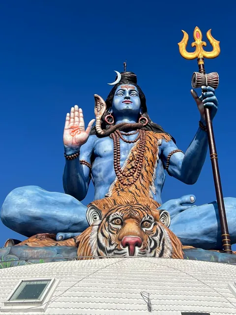
Pexels License · Keerthi Kumar · Pexels
Pexels photo 32171328
Original 3024×4032 px
source pageWhy: Blue Shiva seated on tiger skin with trishul under a deep blue sky: the founder's look 1 and 3 in one photo (by Keerthi Kumar; no EXIF on Pexels, uploaded May 2025, real statue)
Option 2 · FREE
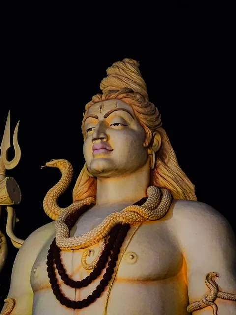
Pexels License · Prasang Yadav · Pexels
Pexels photo 37399738
Original 3500×2625 px
source pageWhy: Lit Shiva statue against a black night sky: the closest free match to the cinematic dark-sky look
Option 3 · FREE
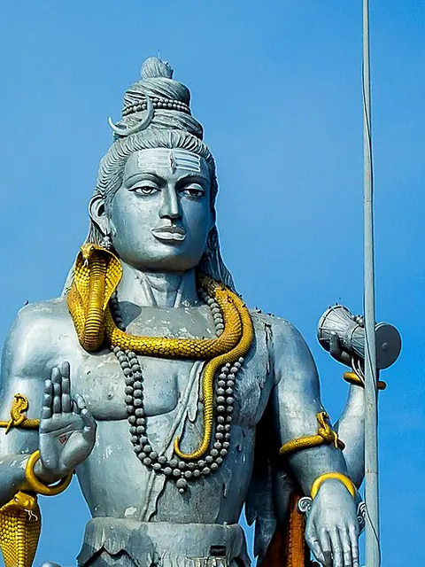
CC BY-SA 4.0 · MaximusPrasad · Wikimedia Commons
Murudeshwara Temple219.jpg
Original 3000×1945 px
source pageWhy: Murudeshwar Shiva, silver and gold against saturated blue sky: the famous grand-statue look
₹797.68 · PAID
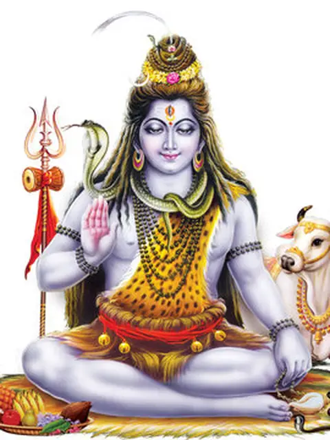
Watermarked site preview, for evaluation onlyAdobe Stock standard licence · Cavan
Hindu God Shiva Digital Painting (ID 446861505)
5549×6378 px
Price: ₹797.68 (Adobe Stock India, 1 credit from the 5-credit pack ₹3,988.40, stock.adobe.com/in/plans; ₹748.56 each with the 16-credit pack)
item pageWhy: Classic glossy calendar Shiva: blue skin, crescent moon, trishul with damaru, tiger skin, snake, Nandi (white background, no Himalaya). Part of a ~2021 human-made calendar-painting set
₹797.68 · PAID
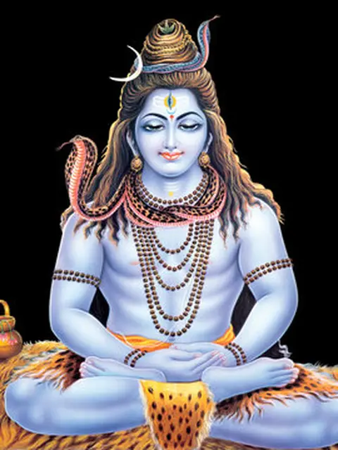
Watermarked site preview, for evaluation onlyAdobe Stock standard licence · Cavan
Hindu God Shiva Digital Painting (ID 446861512)
5931×6000 px
Price: ₹797.68 (Adobe Stock India, 1 credit from the 5-credit pack ₹3,988.40, stock.adobe.com/in/plans; ₹748.56 each with the 16-credit pack)
item pageWhy: Meditating blue Shiva on pure black: the closest human-made match to the cinematic look (no moon or stars)
In the app: Recommended (option 1)
Deity: hanuman
Reviewer: Saffron Hanuman with a raised blessing hand against clear sky: bold and readable at 48px.
Option 1 · FREE Top free pickRecommended
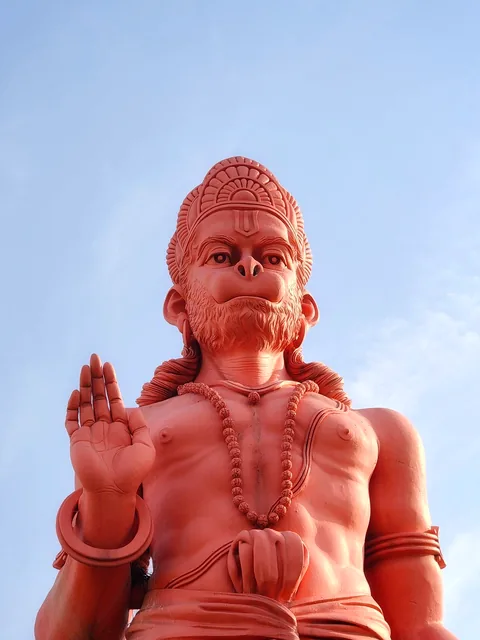
Pexels License · Mrcoolhitman · Pexels
Pexels photo 37260545
Original 3072×4096 px
source pageWhy: Towering saffron Hanuman, blessing hand raised, clean blue sky: bold and readable small
Option 2 · FREE
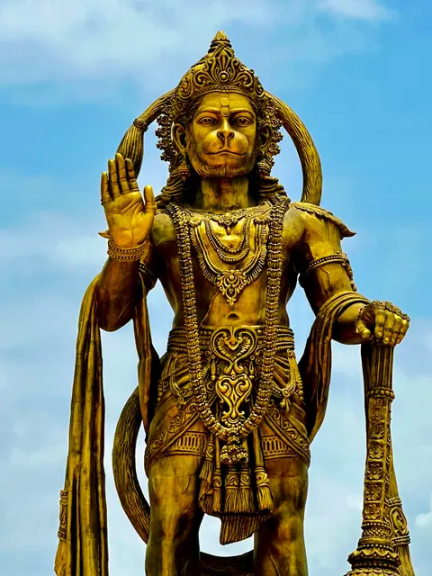
Pexels License · Darkmodecinema · Pexels
Pexels photo 18296591
Original 3024×4032 px
source pageWhy: Golden Hanuman at Sarangpur under blue sky with gada: glossy and royal
Option 3 · FREE
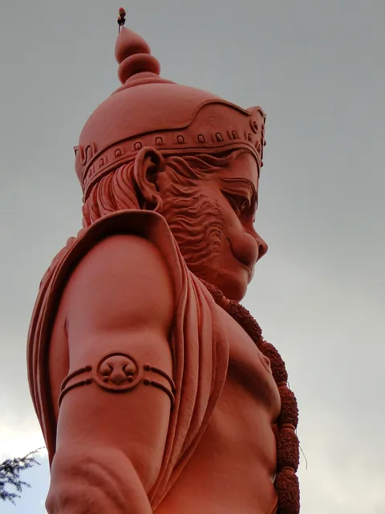
CC BY-SA 4.0 · Jishnu Mohan · Wikimedia Commons
Hanuman Statue in Jakhoo Temple.jpg
Original 2592×3456 px
source pageWhy: Jakhu 108 ft Hanuman, saffron face in profile against the Shimla sky: grand-statue look
₹797.68 · PAID
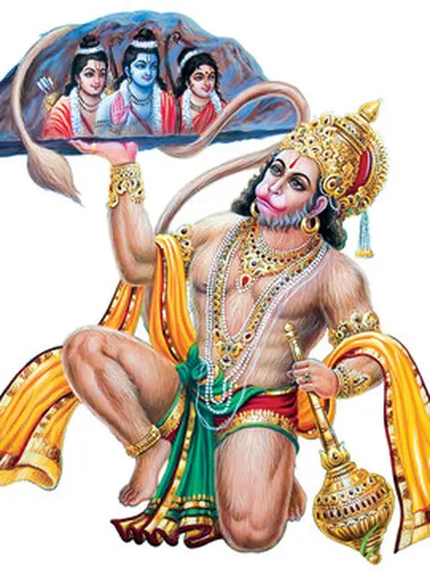
Watermarked site preview, for evaluation onlyAdobe Stock standard licence · Cavan
Rama vakta Indian Lord Hanuman (ID 446861525)
6000×6234 px
Price: ₹797.68 (Adobe Stock India, 1 credit from the 5-credit pack ₹3,988.40, stock.adobe.com/in/plans; ₹748.56 each with the 16-credit pack)
item pageWhy: Calendar-style Hanuman carrying the mountain with Ram, Sita and Lakshman; same set as the Shiva paintings
In the app: Recommended (option 1)
Deity: ram
Reviewer: Blue Rama with bow and a golden prabhavali is the most iconic option; option 2's white-faced murti is harder to identify as Rama.
Option 1 · FREE Top free pickRecommended
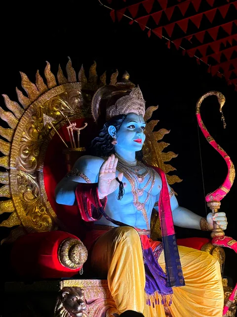
Pexels License · Gururaj Moger · Pexels
Pexels photo 37044766
Original 3024×4032 px
source pageWhy: Blue Rama with bow and golden prabhavali, festival-lit: closest to calendar-art Rama (iPhone 15 EXIF, Udupi, March 2026)
Option 2 · FREE
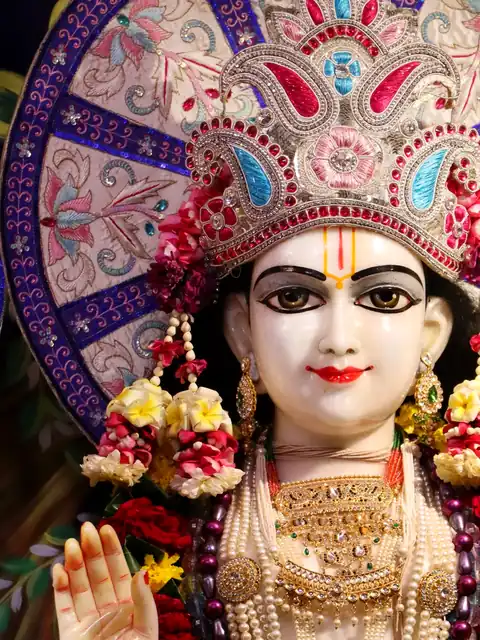
Pexels License · Dinesh Kalola · Pexels
Pexels photo 18253865
Original 2714×4160 px
source pageWhy: Close-up of a crowned, garlanded Rama murti with bow, rich jewellery: strong face for the ring
Option 3 · FREE
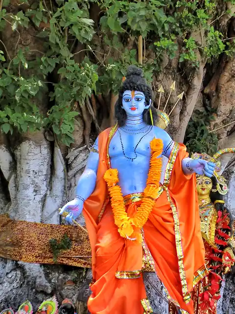
CC BY-SA 4.0 · Nayan j Nath · Wikimedia Commons
Rama Idol.jpg
Original 3652×4960 px
source pageWhy: Blue Rama idol in saffron dhoti under a banyan tree: bright and simple
₹797.68 · PAID
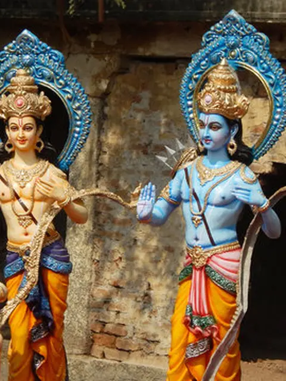
Watermarked site preview, for evaluation onlyAdobe Stock standard licence · reddees
Idols of Rama, Lakshmana and Sita in rath yatra, Sri Rama Navami (ID 109014074)
3000×2000 px
Price: ₹797.68 (Adobe Stock India, 1 credit from the 5-credit pack ₹3,988.40, stock.adobe.com/in/plans; ₹748.56 each with the 16-credit pack)
item pageWhy: Real photo of brightly painted idols: blue Rama with bow, Sita, Lakshmana, Hanuman (contributor with a long Indian-photo portfolio)
In the app: Recommended (option 1)
Deity: krishna
Reviewer: Blue skin, peacock crown, flute and cow make it the most recognisable; option 2 is the most vibrant but its pale face reads less as Krishna when small.
Option 1 · FREE Top free pick
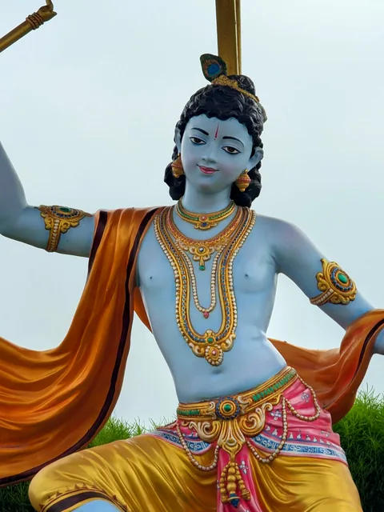
Pexels License · Ramakant · Pexels
Pexels photo 38731156
Original 3072×4080 px
source pageWhy: Blue Krishna with flute and flowing saffron sash against open sky: calendar pose as a statue
Option 2 · FREE
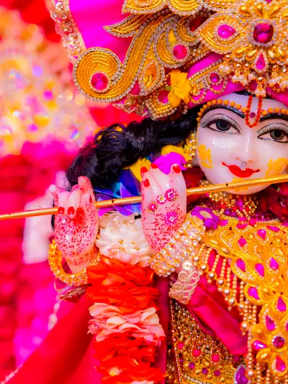
Pexels License · Itsjatindubey · Pexels
Pexels photo 30816806
Original 9504×6336 px
source pageWhy: Close-up Krishna idol with flute, pink and gold flowers: very saturated
Option 3 · FREE Recommended
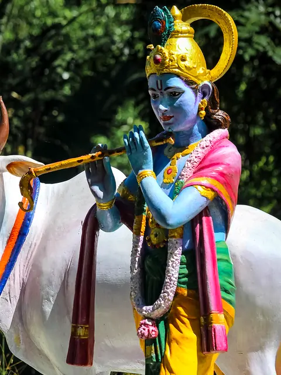
CC BY-SA 4.0 · JVN5871 · Wikimedia Commons
Sree Krishna statue 2.jpg
Original 3404×4849 px
source pageWhy: Blue Krishna with cow, bright yellow dhoti, outdoor daylight
In the app: Top free pick (option 1) and Recommended (option 3)
Deity: radha_krishna
Reviewer: Both faces stay clear and glossy at 48px; the painting fits the look but its figures get lost when small.
Option 1 · FREE Top free pick
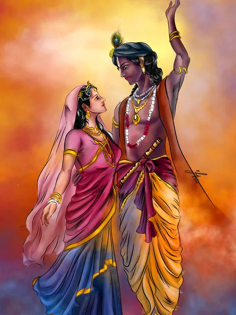
CC BY-SA 3.0 · ottenimation · DeviantArt
Radha Krishna - Colored in Love
Original 1995×2661 px
source pageWhy: Hand-painted Radha Krishna in glowing orange and crimson sky: the only free calendar-style painting found (CC BY-SA, human-made, pencil-to-digital)
Option 2 · FREE Recommended
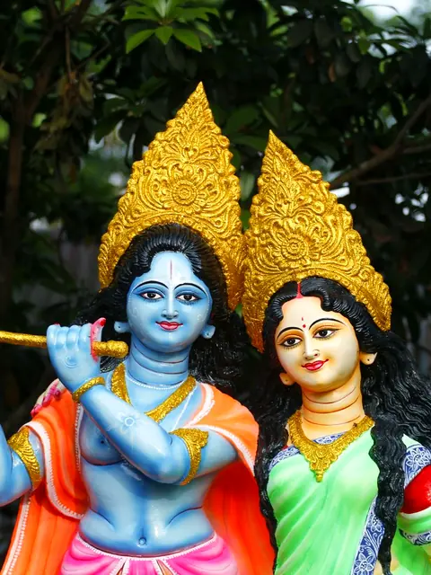
Pexels License · Utpaladhikary · Pexels
Pexels photo 8051165
Original 5184×3456 px
source pageWhy: Blue Krishna and Radha statues side by side, garden light: clear faces
Option 3 · FREE
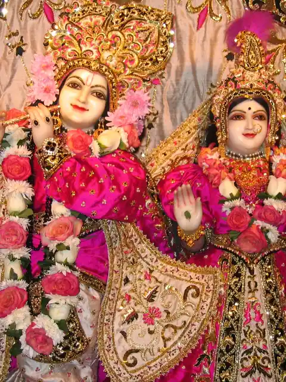
CC BY-SA 3.0 · Richard J. Cole (aka Radha Mohan Das ) · Wikimedia Commons
Radha Londonishvara Deities at Hare Krishna temple in London.jpg
Original 1870×1403 px
source pageWhy: Radha Londonishvara (ISKCON London) in pink and gold shringar: glossy temple darshan
In the app: Top free pick (option 1) and Recommended (option 2)
Deity: devi (Durga / Amman)
Reviewer: Ten-armed Durga in red and gold is vibrant and unmistakable; option 2 has the best face at 48px.
Option 1 · FREE Top free pickRecommended
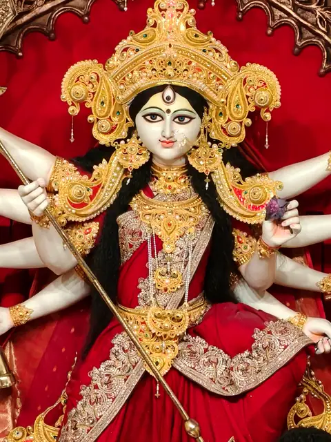
Pexels License · Trishik Bose · Pexels
Pexels photo 34093387
Original 3072×4096 px
source pageWhy: Ten-armed Durga in red and gold, crown and trishul: vibrant and unmistakable
Option 2 · FREE
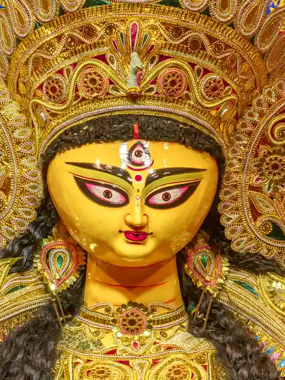
Pexels License · Sobraj Sarkar · Pexels
Pexels photo 40322405
Original 4128×5625 px
source pageWhy: Golden Durga face close-up with ornate mukut: glowing, reads at 48px
Option 3 · FREE
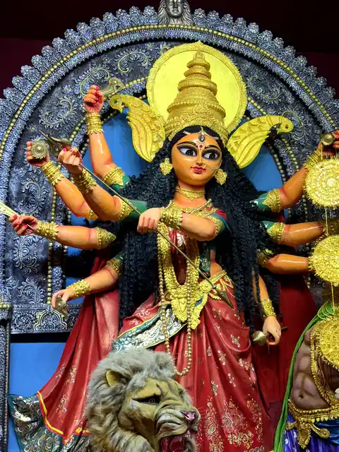
CC BY-SA 4.0 · Pramanikshreya · Wikimedia Commons
Durga Puja Festival - Kolkata October 2025.jpg
Original 3024×4032 px
source pageWhy: Durga with lion, Kolkata pandal 2025, saturated reds and blues
In the app: Recommended (option 1)
Deity: ganesha
Reviewer: Frontal Lalbaugcha Raja in green and gold is iconic and readable.
Option 1 · FREE Top free pickRecommended
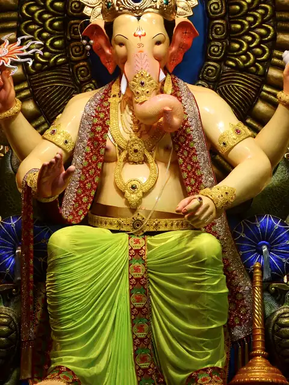
CC BY-SA 4.0 · NatePowell · Wikimedia Commons
Lalbaugh Ganesha.jpg
Original 2636×3408 px
source pageWhy: Lalbaugcha Raja in green and gold, frontal: Mumbai's most famous Ganpati
Option 2 · FREE
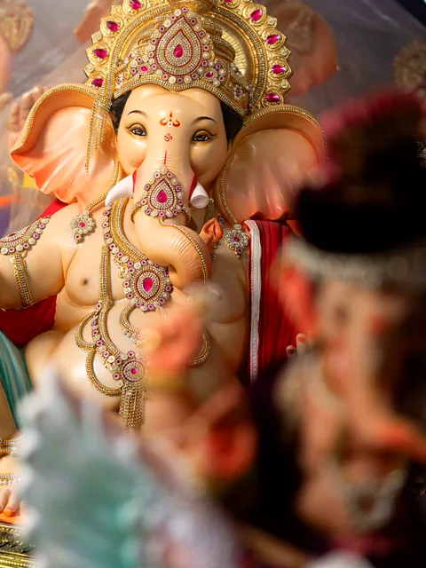
Pexels License · Rajatsahuphotography · Pexels
Pexels photo 33643802
Original 3644×4857 px
source pageWhy: Pink and gold Ganesh idol with jewels, soft bokeh: bright and friendly
Option 3 · FREE
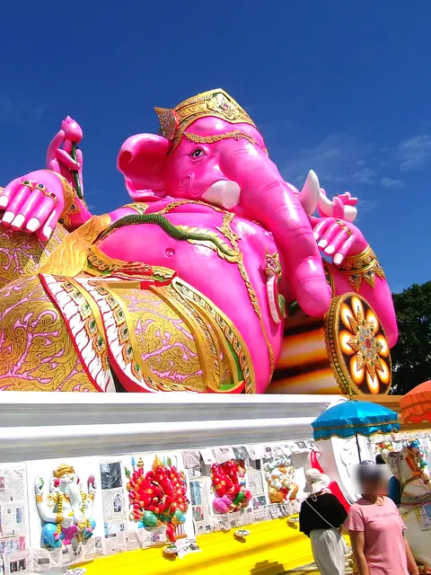
CC BY-SA 4.0 · Vee Satayamas · Wikimedia Commons
Lord Ganesh statue in Chachoengsao.jpg
Original 4337×3060 px
source pageWhy: Giant pink Ganesha at Chachoengsao against blue sky: grand-statue look
In the app: Recommended (option 1)
Deity: murugan
Reviewer: Colourful Murugan with vel and peacock has a clear frontal face at 48px; the paid statue's avatar crop is mostly sky.
Option 1 · FREE Top free pick
Pexels License · Gowtham Agm · Pexels
Pexels photo 36076779
Original 4000×6000 px
source pageWhy: Golden Murugan with vel and peacock-feather glow, red and white garlands: warm and festive (Canon EOS 200D II EXIF on Pexels)
Option 2 · FREE
CC BY-SA 3.0 · CEphoto, Uwe Aranas · Wikimedia Commons
Gombak Selangor Batu-Caves-02.jpg
Original 3840×5760 px
source pageWhy: Batu Caves 140 ft golden Murugan face against limestone cliff: grand-statue look
Option 3 · FREE Recommended
Pexels License · Fran · Pexels
Pexels photo 40265347
Original 3974×5961 px
source pageWhy: Colourful Murugan with peacock at Batu Caves, dark backdrop: glossy and saturated
₹797.68 · PAID
Watermarked site preview, for evaluation onlyAdobe Stock standard licence · Yana Shevchenko
Top of the Murugan statue at Batu Caves, Kuala Lumpur (ID 311966565)
7360×4912 px
Price: ₹797.68 (Adobe Stock India, 1 credit from the 5-credit pack ₹3,988.40, stock.adobe.com/in/plans; ₹748.56 each with the 16-credit pack)
item pageWhy: Golden Murugan with vel against clear blue sky (free Batu Caves options are close; low priority)
In the app: Top free pick (option 1) and Recommended (option 3)
Deity: venkatesha (Balaji / Tirupati)
Reviewer: Same Tirupati alankaram as option 1 but the full kireetam stays in frame; paid is not clearly better.
Option 1 · FREE Top free pick
Pexels License · Ram Kondisetti · Pexels
Pexels photo 39650029
Original 3456×5184 px
source pageWhy: Balaji with namam, kireetam and red-white garlands: exactly the Tirupati alankaram look
Option 2 · FREE Recommended
Pexels License · Ram Kondisetti · Pexels
Pexels photo 39650020
Original 3456×5184 px
source pageWhy: Same alankaram framed in a gold arch: wider, temple feel
Option 3 · FREE
CC BY-SA 4.0 · Tshiv · Wikimedia Commons
Lord Balaji Ashland.jpg
Original 925×1752 px
source pageWhy: Lord Balaji at Ashland, gold kavacham and garlands
₹797.68 · PAID
Watermarked site preview, for evaluation onlyAdobe Stock standard licence · reddees
Close-up of Lord Balaji (Venkateswara) in a temple (ID 256773083)
2559×4521 px
Price: ₹797.68 (Adobe Stock India, 1 credit from the 5-credit pack ₹3,988.40, stock.adobe.com/in/plans; ₹748.56 each with the 16-credit pack)
item pageWhy: Vivid, flower-decked Balaji idol in portrait format, ~2019
In the app: Top free pick (option 1) and Recommended (option 2)
Deity: vishnu
Reviewer: Guruvayurappan oil painting is vivid, not dull, and reads well small; the paid Lakshmi-Narayan is pale.
Option 1 · FREE
Pexels License · Tanay Kundu · Pexels
Pexels photo 39656371
Original 12240×16320 px
source pageWhy: Blue Vishnu holding a conch under a golden Sheshnaag hood, pandal sculpture with two sages: glossy gold on black (huge 12240×16320 file, no EXIF; sculpture details are coherent)
Option 2 · FREE
Pexels License · Samma · Pexels
Pexels photo 32647723
Original 2954×3939 px
source pageWhy: Garuda Wisnu Kencana Vishnu face against blue sky: grand-statue look
Option 3 · FREE Top free pickRecommended
CC BY-SA 4.0 · Rajasekharan Parameswaran · Wikimedia Commons
GURUVAYURAPPAN - OIL PAINTING BY RAJASEKHARAN.jpg
Original 2826×3540 px
source pageWhy: Oil painting of Vishnu (Guruvayurappan) with chakra and conch, glowing lamps in a dark shrine: the only free calendar-style painting found for Vishnu; the artist uploaded it himself as own work
₹797.68 · PAID
Watermarked site preview, for evaluation onlyAdobe Stock standard licence · Cavan
Laskmi Narayan High Resolution photo (ID 446861774)
4800×5217 px
Price: ₹797.68 (Adobe Stock India, 1 credit from the 5-credit pack ₹3,988.40, stock.adobe.com/in/plans; ₹748.56 each with the 16-credit pack)
item pageWhy: Calendar-art Vishnu with Lakshmi in the same set and style as the Shiva paintings
In the app: Recommended (option 3)
Deity: lakshmi
Reviewer: Serene glossy Mahalakshmi face with crown and nath reads well at 48px; option 2 is easily mistaken for Durga.
Option 1 · FREE Top free pickRecommended
Pexels License · Amit Prajapati · Pexels
Pexels photo 40041403
Original 3072×4096 px
source pageWhy: Mahalakshmi with gold mukut and jewellery, warm light: glossy and serene face (no EXIF on Pexels; nath chain, crown and jasmine details are coherent, so a real murti)
Option 2 · FREE
Pexels License · Utsaw Pan · Pexels
Pexels photo 34115076
Original 3456×5184 px
source pageWhy: Bengal-style Lakshmi idol in red and gold, Durga Puja: glossy and bright
Option 3 · FREE
CC BY 4.0 · Marajozkee · Wikimedia Commons
Lakshmi Puja Odisha India MB02.jpg
Original 3024×4032 px
source pageWhy: Lakshmi Puja idol, Odisha, pink and gold on silver backdrop
In the app: Recommended (option 1)
Deity: ayyappa
Reviewer: Iconic yogapatta pose in red-gold prabhavali, clearest face at 48px; option 3's licence is doubtful.
Option 1 · FREE Top free pick
Pexels License · Yogeshwar Y · Pexels
Pexels photo 35339691
Original 4480×6720 px
source pageWhy: Golden Ayyappa in yogapatta pose with jasmine garland: the iconic Sabarimala form (Canon EOS R EXIF, Dec 2023)
Option 2 · FREE Recommended
CC BY 4.0 · Chinnareddy435 · Wikimedia Commons
Idol of Lord Ayyappa in a Hall at Sabarimala.jpg
Original 2352×3136 px
source pageWhy: Ayyappa in gold prabhavali on red, Sabarimala hall: bright and clear
Option 3 · FREE
CC BY-SA 2.5 · Dillipan (uploader) · Wikimedia Commons
Ayyappan images.jpg
Original 3154×2730 px
source pageWhy: Ayyappa alankaram with orange and white garlands (uploader photo, 2023; licence tag CC BY-SA 2.5 is unusual for a 2023 upload, so treat as lower-confidence)
₹797.68 · PAID
Watermarked site preview, for evaluation onlyAdobe Stock standard licence · Astro
Lord Ayyappan (ID 309141589)
3000×3500 px
Price: ₹797.68 (Adobe Stock India, 1 credit from the 5-credit pack ₹3,988.40, stock.adobe.com/in/plans; ₹748.56 each with the 16-credit pack)
item pageWhy: Glowing, glossy illustration of Ayyappa on a violet halo, ~2020; clean, no artefacts
In the app: Top free pick (option 1) and Recommended (option 2)
Deity: sai (Shirdi Sai Baba)
Reviewer: Blue robe, red cap and marigolds: the most vibrant and instantly recognisable Sai Baba.
Option 1 · FREE Top free pickRecommended
Pexels License · Saiyuvasena · Pexels
Pexels photo 14029228
Original 3024×4032 px
source pageWhy: Sai Baba in blue robe and saffron cap with marigold garlands: very vibrant
Option 2 · FREE
Pexels License · Henry V · Pexels
Pexels photo 40209476
Original 3024×4032 px
source pageWhy: White Sai Baba statue, blessing hand, against blue sky: grand-statue look
Option 3 · FREE
Pexels License · Saiyuvasena · Pexels
Pexels photo 13725452
Original 2919×4032 px
source pageWhy: Sai Baba on gold throne with garlands: temple darshan
In the app: Recommended (option 1)
Deity: saraswati
Reviewer: Clear, rich-coloured face with veena reads best small.
Option 1 · FREE Top free pickRecommended
Pexels License · Anubhav · Pexels
Pexels photo 35982582
Original 2296×4080 px
source pageWhy: Saraswati with veena, gold crown, pink garlands: rich colour, clear face
Option 2 · FREE
Pexels License · Sayoni Manna · Pexels
Pexels photo 35698236
Original 3078×4103 px
source pageWhy: Saraswati with golden veena, Kolkata, glossy gold and red
Option 3 · FREE
CC BY 4.0 · Mr. Debapriya Hore · Wikimedia Commons
Saraswati Puja at Phansidewa Primary Teachers' Training Institute, Kantivita, Ph
Original 1244×1600 px
source pageWhy: Saraswati Puja idol with marigold backdrop and rainbow halo
In the app: Recommended (option 1)
Story: ghat-sunrise
Reviewer: Devotee with raised arms greeting a saturated sun over the Ganga: colour and devotion together.
Option 1 · FREE Top free pick
CC BY-SA 4.0 · Ronak Sunia · Wikimedia Commons
Sunrise@ghat.jpg
Original 4000×5000 px
source pageWhy: Orange sun over the Ganga at Varanasi: saturated golden hour
Option 2 · FREE Recommended
CC BY-SA 2.0 · jeminichronicles · Wikimedia Commons
Salutations to the Ganges at sunrise, Varanasi.jpg
Original 3000×4000 px
source pageWhy: Devotee with raised arms greeting the sunrise on the Ganga
Option 3 · FREE
Pexels License · Dmitry Voronov · Pexels
Pexels photo 31072582
Original 4672×7008 px
source pageWhy: Woman praying atop ghat, golden morning (carried over from v1)
Story: temple-morning
Reviewer: Nanjangud gopuram glowing gold against blue sky is the most glossy; Hampi sunrise a close second.
Option 1 · FREE Top free pick
CC BY-SA 4.0 · Vijaybhaskar.s · Wikimedia Commons
Hampi virupaksha temple sunrise.jpg
Original 3366×5048 px
source pageWhy: Hampi Virupaksha gopuram under a pink sunrise sky
Option 2 · FREE
CC BY 2.0 · Vinoth Chandar from Chennai, India · Wikimedia Commons
03 sunrise view of Meenakshi temple gopuram.jpg
Original 890×1259 px
source pageWhy: Gopuram silhouette against a red-to-blue dawn sky
Option 3 · FREE Recommended
Pexels License · Ram Iyengar · Pexels
Pexels photo 22890480
Original 3024×4032 px
source pageWhy: Nanjangud gopuram glowing in warm golden light (carried over from v1)
Story: young-pray
Reviewer: The only option showing a young person praying (tilak, eyes closed).
Option 1 · FREE Top free pick
CC BY-SA 4.0 · Nayan j Nath · Wikimedia Commons
A woman lightening Diyas during Diwali.jpg
Original 3568×2004 px
source pageWhy: Woman lighting rows of diyas at night: warm glow, devotional
Option 2 · FREE Recommended
Pexels License · Ventara Films · Pexels
Pexels photo 35672087
Original 4608×8192 px
source pageWhy: Young man with tilak praying, eyes closed (carried over from v1)
Option 3 · FREE
CC BY-SA 3.0 · Jorge Royan · Wikimedia Commons
India - Varanasi candle temple - 2196.jpg
Original 3279×2329 px
source pageWhy: Woman praying before lit lamps in a temple
Story: morning-tea
Reviewer: Hand holding a kulhad feels personal and reads simply.
Option 1 · FREE Top free pickRecommended
Pexels License · Mahesh E · Pexels
Pexels photo 10377676
Original 3450×4189 px
source pageWhy: Hand holding kulhad of milky chai (carried over from v1)
Option 2 · FREE
Pexels License · Sanket Sawale · Pexels
Pexels photo 20270270
Original 3270×4905 px
source pageWhy: Kulhad chai with ginger and cardamom (carried over from v1)
Option 3 · FREE
CC BY-SA 4.0 · Mihir0699 · Wikimedia Commons
Garam Chai.jpg
Original 3456×3386 px
source pageWhy: Three kulhad chais from above, warm and homely
Reviewer: Phone-lit face and visible screen tell the doom-scroll story most clearly; option 3 is too dark.